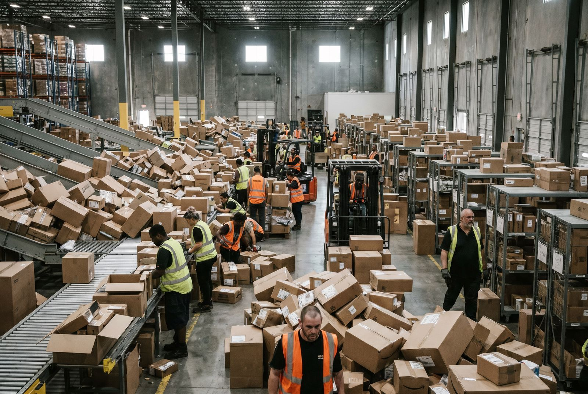

Black Friday. Du ved det kommer. Hvert år.
Og hvert år er det kaos.
Leveringstider stiger med 3,5 dage. Fejlraten fordobles. Vikarer hyres i panik og bruger halv tid på oplæring.
Du kom igennem det , "men kun lige akkurat."
Et dårligt håndteret peak koster 120.000,450.000 kr. i tabt omsætning, fejl og overtid. Ved 6× normalt volumen uden struktur mister du 15,25% af potentiel omsætning.
Hvad er et peak?
👉 Har du samme problem? Se hvordan SmartPack løser det
Et peak er en periode med markant højere ordrevolumen end normalen. For e-commerce er de primære peaks:
- Black Friday/Cyber Monday: Typisk 4,8× normalt volumen, 3,5 dage
- Kampagneudsendelser: 2,4× normalt, 1,2 dage
- Sæsonstart: Gradvis stigning over 2,4 uger
- Medieopmærksomhed: Uforudsigeligt, 1,3 dage
Black Friday som benchmark: 6× normal kapacitet er det tal, et velforberedt lager bør kunne håndtere.
Hvornår er det et problem?
Din peakhåndtering er utilstrækkelig, hvis:
- Leveringstider stiger med mere end 1 arbejdsdag under peak
- Fejlraten stiger under peak (stress multiplikerer fejl)
- Du afviser ordrer eller stopper kampagner for tidligt på grund af kapacitetsmangel
- Du henter vikarer i panik med 2,3 dages varsel og bruger halv tid på oplæring
- Du oplever systemnedbrud eller stærkt forsinket synkronisering under peak
Klassisk symptom: "Vi kom igennem det, men kun lige akkurat" , hvert år. Det er ikke en strategi.
Hvorfor det er vigtigt (tal)
Mistet omsætning: En e-commerce virksomhed med 500.000 kr. i dagsomsætning der mister 30% kapacitet på Black Friday mister potentielt 300.000,500.000 kr. i realisabel omsætning på tre dage.
Øgede fejlomkostninger: Fejlraten stiger markant under stress. En lageroperation med 1% fejlrate under normal drift kan ramme 3,5% under peak. Med 6× ordreantal og 3× fejlrate = 18× den normale fejlomkostning. Én dag Black Friday med disse tal kan koste 150.000+ kr. i direkte fejlomkostninger.
Kundeafgang: 67% af kunder der oplever en negativ leveringsoplevelse under højtid køber hos konkurrenten næste gang. LTV-tab per kunder: 450,850 kr.
Brudpunkterne: Brydepunkter for skaleringsmodel:
- Under 50 ordrer/dag: enkeltplukning fungerer
- 50,200 ordrer/dag: batch picking nødvendig
- 200,500 ordrer/dag: zonebaseret picking + batch
- Over 500 ordrer/dag: automatiseret routing, multiple plukteams
Hvad der faktisk sker (og hvad I opdager for sent)
Scenarie: Black Friday morgen 06:00
Ordrer strømmer ind. Systemet er langsomt. Plukruter er ikke optimeret til dobbelt antal medarbejdere. To plukkere støder ind i hinanden ved samme hylde. Vikaren fra vikarbureauet ved ikke, hvor vare X er. Pakkebordet har kø. Kunden med premiumfragt er ikke mærket anderledes end ordinær forsendelse.
Ved 14:00 er der 200 ubehandlede ordrer. CEO beslutter at stoppe for nye ordrer. Tre timer Black Friday er tabt omsætning.
Ingen af disse problemer er uundgåelige. De er alle direkte konsekvenser af manglende peak-kapacitetsplanlægning.
Det opdager de fleste for sent
- At fejlraten ikke stiger lineært , den eksploderer , Normal fejlrate: 3%. Black Friday volumen: 6×. Fejlraten stiger IKKE til 3% , den stiger til 8-12% (stress + vikarer + lignende SKU'er placeret ved siden af hinanden). 500 ordrer/dag bliver til 3.000. Ved 10% fejlrate = 300 fejl × 450 kr. = 135.000 kr. tabt på 24 timer. Det er ikke skalering , det er multiplikation.
- At vikarer uden scanning-disciplin koster 5-8× mere end erfarne , 12 vikarer. 8 af dem springer verifikation over "for at følge med". Resultat: 67% af fejlene kommer fra 67% af medarbejderne (vikarerne). Men I måler ikke fejlrate per medarbejder , så I ved ikke hvem der koster jer 135.000 kr. på én dag.
- At systemet er flaskehalsen , ikke personalet , Shopify, WMS og integrationer er testet ved normalt volumen. Under 6× load: synkroniseringstider stiger fra 2 min til 18 min. Oversalg opstår. Plukkere venter på at systemet loader. I troede det var et personaleproblem , det var et tech-problem.
Typiske fejl
1. Kun planlægge ekstra personale , ikke ekstra processer Fire ekstra medarbejdere hjælper intet, hvis plukruterne ikke er designet til fire ekstra medarbejdere. Kongestionen i gangene er problemet.
2. Hente vikarer uden onboarding En uforberedt vikar i et ukendt lager bidrager negativt de første 2,4 timer. Med en dag onboarding bidrager de positivt fra time ét.
3. Ikke stresstest systemer inden peak Shopify, WMS og integrationer er testet ved normalt volumen. Under 6× load kan synkroniseringstider stige og oversalg opstå. Test dette inden kampagnestart.
4. Håndtere alle ordrer ens under peak Premiumordrer, abonnementsordrer og standardordrer skal prioriteres forskelligt. Et WMS der prioriterer automatisk forhindrer, at premiumkunder behandles sidst.
Sådan gør du det rigtigt
1. Planlæg for 6× kapacitet , altid Brug Black Friday som dimensioneringsscenario. Kan dit setup håndtere 6× normal volumen? Hvis nej: hvad bryder ned, og hvad koster det at løse det?
2. Optimer plukruter til multipel-medarbejder-flow TSP-optimerede ruter med zonebaseret opdeling forhindrer, at plukkere blokerer hinanden. Definer tydeligt, hvilken medarbejder dækker hvilken zone.
3. Forbered onboarding-materiale til vikarer Et 30-minutters onboarding-program der dækker: plukrute, scanning, fejlprocedure og pakkebord. Lamineeret og ophængt i lageret.
4. Kør kapacitetstest 4 uger inden peak Simulér 3× normalt ordreantal på en normal onsdag. Identificer flaskehalse nu. Løs dem i de resterende 4 uger.
5. Sæt automatisk prioritering op Ordrer med premiumfragt, abonnementskunder og store B2B-konti prioriteres automatisk i WMS. Standard-ordrer følger normal kø.
Brug denne artikel: Tjekliste og næste skridt
- ✓ Beregn 6× dit daglige normal-ordreantal
- ✓ Identificer tre processer der bryder ned ved 6× volumen
- ✓ Plan kapacitetstest 4 uger inden næste peak
- ✓ Forbered 30-minutters vikarer onboarding-program
- ✓ Konfigurer ordreprioritering i WMS
- ✓ Test systemintegration under simuleret peak-load
Formel: Peak-kapacitetsbehov = Normal dagvolumen × 6 (Black Friday faktor)
Næste skridt: Læs "Dårlig onboarding af medarbejdere" og "Vi laver for mange pakkefejl" for komplet peak-beredskab.
Regnestykket: Hvad koster dårlig peak-håndtering REELT?
| Scenarie | Uden WMS | Med SmartPack | Forskel |
| Black Friday (3.000 ordrer, fejlrate 10%) | 135.000 kr. fejl på 1 dag | 22.500 kr. fejl (1,5%) | 112.500 kr. spart |
| Vikarer (12 stk, 3 uger onboarding) | 287.000 kr. (løn + fejl) | 133.200 kr. (30 min onboarding) | 153.800 kr. spart |
| Tabt omsætning (stopper kampagne dag 1) | 280.000 kr. | 0 kr. (håndterer 6× volumen) | 280.000 kr. spart |
| Total Black Friday-uge | 702.000 kr. tabt | 155.700 kr. cost | 546.300 kr. spart |
Sådan understøtter SmartPack det
JA til SmartPack hvis:
- Black Friday volumen 6× normalt †’ Systemet skalerer automatisk, ingen systemjustering = 546.300 kr. spart på 1 uge
- I bruger vikarer †’ 30 min onboarding vs. 3 uger = 153.800 kr. spart
- Fejlrate stiger under stress †’ Scanning forhindrer stress-fejl = 112.500 kr. spart
NEJ til SmartPack hvis:
- Ingen peaks (volumen altid stabilt) †’ ROI kræver volumen-variation
- Under 50 ordrer/dag normalt †’ Manuel drift billigere
Konkret: SmartPack distribuerer automatisk ordrer til tilgængelige plukkere, justerer batchstørrelse dynamisk og viser live dashboard over kapacitetsstatus. Vikarer onboardes på 30 minutter og guides gennem alle processer , ingen erfaring kræves.